생산자동화기능사 (2011-07-31 기출문제)
1과목: 기계가공법 및 안전관리(대략구분)
1. 사인 바는 피측정물의 무엇을 측정하기에 적합한가?
- 나사 측정
- 길이 측정
- 임의의 각 측정
- 면 조도 측정
(정답률: 87%)

2. 보통선반의 심압대에 ø13mm 이상의 드릴을 고정하는데 사용하는 도구는?
- 맨드릴
- 슬리브
- 총형바이트
- 앤드밀
(정답률: 62%)
3. 기계에서 발생하는 소음이나 진동 등과 같은 주위 환경에서 오는 오차 또는 자연 현상의 급변 등으로 생기는 오차는?
- 측정기의 오차
- 시차
- 우연오차
- 긴 물체의 휨에 의한 영향
(정답률: 85%)
4. 양두 그라인더에서 일감은 숫돌 차의 어느 곳에 대고 연삭을 하여야 하는가?
- 숫돌의 원주면
- 원통의 왼쪽 평면
- 숫돌의 중심축
- 원통의 오른쪽 평면
(정답률: 70%)
5. 가는 지름의 환봉재 또는 일정크기의 재료를 빠르게 중심을 찾아 고정하는 선반척은?
- 마그네틱 척(magnetic chuck)
- 콜릿척(collet chuck)
- 단동척(independent chuck)
- 벨척(bell chuck)
(정답률: 76%)
6. 숏 피닝 가공에서 피닝 효과에 영향을 미치는 주요 인자 3가지는?
- 분사면적, 분사각, 분사시간
- 분사면적, 분사각, 분사속도
- 분사각, 분사속도, 분사시간
- 분사면적, 분사속도, 분사거리
(정답률: 76%)
7. 절삭 유제의 사용목적으로 틀린 것은?
- 절삭공구와 가공물의 마찰을 증가시켜 가공을 빠르게 한다.
- 가공물을 냉각시켜, 절삭열에 의한 정밀도 저하를 방지한다.
- 공구의 마모를 줄이고, 윤활 및 세척작용을 한다.
- 공구의 인선을 냉각시켜 공구의 경도저하를 방지한다.
(정답률: 79%)
8. 선반 작업시 안전사항으로 틀린 것은?
- 절삭 중에는 측정을 하지 않는다.
- 기계 위에 공구나 재료를 올려놓지 않는다.
- 가공물이나 절삭공구의 장착은 정확히 한다.
- 칩이 예리하므로 장갑을 끼고 작업한다.
(정답률: 92%)
9. 3차원 측정기의 구동부에 일반적으로 많이 사용되는 베어링은?
- 공기 베어링
- 오일레스 베어링
- 유니트 베어링
- 니들 베어링
(정답률: 53%)
10. WA 60 K m V 로 표시된 연삭숫돌에서 입자의 크기(입도)를 나타내는 것은?
- WA
- 60
- K
- V
(정답률: 80%)
2과목: 기계제도(대략구분)
11. 기계제도에서 사용하는 치수기입 시 사용되는 기호와 그 설명으로 틀린 것은?
- C : 45° 모떼기
- ø : 지름
- SR : 구의 반지름
- ◇ : 정사각형
(정답률: 90%)
12. 구름베어링의 호칭번호가 6001 C2 P6으로 표시된 경우에 베어링의 안지름은 몇 mm 인가?
- 100
- 60
- 12
- 10
(정답률: 67%)
13. 기계제도에 사용하는 선의 분류에서 가는 실선의 용도가 아닌 것은?
- 치수선
- 치수 보조선
- 지시선
- 외형선
(정답률: 77%)
14. KS 나사 표시 방법에서 G 1/2 A로 기입된 기호의 올바른 해독은?
- 가스용 암나사로 인치 단위이다.
- 관용 평행 암나사로 등급이 A급이다.
- 관용 평행 수나사로 등급이 A급이다.
- 가스용 수나사로 인치 단위이다.
(정답률: 63%)
15. 재료 기호가 “SF340A”로 표시되었을 때 이 재료는 무엇인가?
- 탄소강 단강품
- 고속도 공구강
- 합금 공구강
- 소결 합금강
(정답률: 54%)
16. 축의 치수가
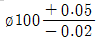
일 때 치수공차는 얼마인가?- 0.02
- 0.03
- 0.⑤
- 0.07
(정답률: 76%)
17. 그림과 같은 도면은 물체를 제3각법으로 정투상한 정면도와 우측면도이다. 이 물체의 평면도로 가장 적합한 것은?
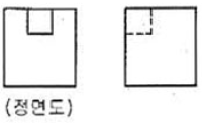
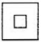
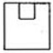
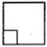
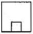
(정답률: 86%)
18. 그림과 같은 도면에 지시한 기하공차의 설명으로 가장 옳은 것은?
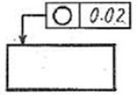
- 원통의 축선은 지름 0.02mm의 원통 내에 있어야 한다.
- 지시한 표면은 0.02mm 만큼 떨어진 2개의 평면 사이에 있어야 한다.
- 임의의 축직각 단면에 있어서의 바깥둘레는 동일 평면 위에서 0.02mm 만큼 떨어진 두 개의 동심원 사이에 있어야 한다.
- 대상으로 하고 있는 면은 0.02mm 만큼 떨어진 2개의 동축 원통면 사이에 있어야 한다.
(정답률: 70%)
19. 표면의 결 도시방법에서 제거 가공율 허락하지 않는 것을 지시하고자 할 때 사용하는 제도 기호로 옳은 것은?
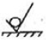
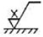
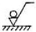
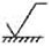
(정답률: 74%)
20. 투상도에서 특정 부분의 도형이 작기 때문에 그 부분을 상세히 도시하거나 치수를 기입할 수 없을 때, 그 부분을 확대하여 별도로 다른 곳에 상세하게 도시하는 것은?
- 보조 투상도
- 국부 투상도
- 부분 확대도
- 부분 투상도
(정답률: 75%)
21. 유압 기기에서 작동유의 기능에 대한 설명으로 가장 바르지 않는 것은?
- 압력 전달 기능
- 윤활 기능
- 방청 기능
- 필터 기능
(정답률: 63%)
22. 압축공기의 건조방식이 아닌 것은?
- 흡수식
- 흡착식
- 냉동식
- 가열식
(정답률: 77%)
23. 다음 중 유압유의 온도 변화에 대한 정도의 변화량을 표시하는 것은?
- 밀도
- 점도지수
- 비체적
- 비중량
(정답률: 78%)
24. 포핏 밸브의 특징이 아닌 것은?
- 구조가 간단하여 먼지 등의 이물질의 영향을 잘 받지 않는다.
- 짧은 거리에서 밸브를 개폐할 수 있다.
- 밀봉효과가 좋고 복귀스프링이 파손되어도 공기압력으로 복귀된다.
- 큰 변환 조작이 필요하고, 다 방향 밸브로 되면 구조가 단순하다.
(정답률: 56%)
25. 다음 중 어큐뮬레이터(축압기)의 용도로 적당하지 않은 것은?
- 펌프 맥동 흡수
- 충격압력의 완충
- 작동유 점도 향상
- 유압 에너지 축적
(정답률: 73%)
26. 다음 중 공압 모터의 특징을 설명한 것으로 틀린 것은?
- 폭발의 위험이 있는 곳에서도 사용할 수 있다.
- 회전수, 토크를 자유로이 조절할 수 있다.
- 과부하시 위험성이 없다.
- 에너지 변환 효율이 높다.
(정답률: 54%)
27. 다음 중 공압장치의 특징이 아닌 것은?
- 동력전달 방법이 간단하다.
- 힘의 증폭이 용이하다.
- 유압장치에 비해 응답성이 우수하다.
- 에너지의 축적이 용이하다.
(정답률: 58%)
28. 다음 중 캐비테이션(공동현상)의 발생 원인으로 잘못된 것은?
- 흡입 필터가 막히거나 급격히 유로를 차단한 경우
- 패킹부의 공기 흡입
- 펌프를 정격속도 이하로 저속회전 시킬 경우
- 과부하이거나 오일의 점도가 클 경우
(정답률: 71%)
29. 방향제어 밸브의 조작방식 중 기계조작 방식에 속하지 않는 것은?
- 플런저 방식
- 페달 방식
- 롤러 방식
- 스프링 방식
(정답률: 60%)
30. 편심 로터가 흡입과 배출구멍이 있는 하우징 내에서 회전하는 형태의 압축기는?
- 피스톤 압축기
- 격판 압축기
- 미끄럼 날개 회전 압축기
- 축류 압축기
(정답률: 71%)
3과목: 메카트로닉스 일반(대략구분)
31. 자동화시스템의 주요 3요소에 속하지 않는 것은?
- 입력부
- 출력부
- 제어부
- 전원부
(정답률: 89%)
32. 다음 중 PLC제어 방식에 대한 설명으로 틀린 것은?
- 고장진단과 점검이 용이하다.
- 제어회로의 변경이 어렵다.
- 산술, 비교연산과 데이터 처리가 가능하다.
- 신뢰성이 높고 고속 동작이 가능하다.
(정답률: 85%)
33. 다음 중 조작용 스위치가 아닌 것은?
- 누름버튼 스위치
- 셀렉터 스위치
- 로터리 스위치
- 타이머
(정답률: 81%)
34. 일상생활에서 사용되는 엘리베이터, 자동판매기와 같이 정해진 순서에 의해 제어되는 방식은?
- 시퀀스 제어
- ON 제어
- 전압 제어
- 되먹임 제어
(정답률: 88%)
35. 다음 중 로봇의 구동요소 중에서 피드백 신호 없이 구동축의 정밀한 위치제어가 가능한 것은?
- 스테핑 모터
- DC 모터
- 공압 구동장치
- 유압 구동장치
(정답률: 68%)
36. 자동화시스템의 구성요소 중 서보모터(Servo Motor)는 주로 어디에 속하는가?
- 메카니즘(mechanism)
- 액추에이터(actuator)
- 파워서플라이(power supply)
- 센서(sensor)
(정답률: 83%)
37. 다음 중 기계적 위치, 방향, 자세 등을 제어량으로 하는 제어는?
- 자동조정
- 서보기구
- 시퀀스 제어
- 프로세스 제어
(정답률: 64%)
38. PLC의 프로그램 중 계전기 시퀀스도를 직접 기입 또는 표시할 수 있는 장점 때문에 최근에 가장 많이 사용되며 프로그램을 작성하면 사다리 모양이 되는 프로그램방식은 어느 것인가?
- 래더도 방식
- 명령어 방식
- 논리도 방식
- 논리식 방식
(정답률: 84%)
39. 어떤 신호가 입력되어 출력 신호가 발생한 후에는 입력 신호가 제거되어도 그 때의 출력 상태를 계속 유지하는 제어방법은?
- 파일럿 제어
- 메모리 제어
- 프로그램 제어
- 조합 제어
(정답률: 77%)
40. 다음 중 평상시 닫혀 있다고 해서 NC(normal closed) 접점이라고 하는 것은?
- a접점
- b접점
- c접점
- T접점
(정답률: 87%)
41. PLC에서 외부기기와 내부회로를 전기적으로 절연하고 노이즈를 막기 위해 입력부와 출력부에 주로 이용하는 소자는?
- 사이리스터
- 포토다이오드
- 포토커플러
- 트랜지스터
(정답률: 67%)
42. “작업의 전부 또는 일부를 사람이 직접 조작하지 않고 컴퓨터 시스템 등을 이용한 기계장치에 의하여 자동적으로 작동하도록 하는 것”을 무엇이라 정의하는가?
- 자동화(Automation)
- 기계화(Mechanization)
- 제어(Control)
- 수치제어선반(CNC)
(정답률: 88%)
43. 다음 중 되먹임 제어의 단점을 나타낸 것은?
- 제어계의 특성을 향상시킬 수 있다.
- 외부 조건의 변화에 대한 영향을 줄일 수 있다.
- 목표값에 정확히 도달할 수 있다.
- 제어계가 복잡해진다.
(정답률: 82%)
44. 다음 중 전자력에 의하여 접점을 개폐하는 기능을 가진 제어기기를 무엇이라고 하는가?
- 전자 계전기
- 선택 스위치
- 나이프 스위치
- 리밋 스위치
(정답률: 81%)
45. 제어계의 입력신호에 대한 출력신호의 관계를 나타낸 것은?
- 목표값
- 전달함수
- 제어대상
- 제어량
(정답률: 54%)
46. 배타적 OR회로(EX-OR 회로)의 설명으로 올바른 것은?
- 모든 입력이 0일 때에만 출력이 1인 회로
- 서로 다른 입력이 가해질 때에만 출력이 1인 회로
- 모든 입력이 1인 경우만을 제외하고 출력이 1인 회로
- 입력이 0이면 출력이 1이고, 입력이 1이면 출력이 0인 회로
(정답률: 58%)
47. 시퀀스 제어용 문자 기호 중 차단기 및 스위치류의 기호에서 압력스위치에 대항하는 것은?
- PF
- PRS
- PCT
- SPS
(정답률: 73%)
48. 다음 중 논리식이 틀린 것은?
- A + B = B + A
- A ㆍ B = B ㆍ A
- A + A = A
- A ㆍ 1 = 1
(정답률: 72%)
49. 시퀀스 제어용 기기로서 제어회로에 신호가 들어오더라도 바로 동작하지 않고 설정시간 만큼 지연동작을 시키려할 때 사용되는 제어용 기기는?
- 한시 계전기
- 전자 릴레이
- 전자 개폐기
- 열동 계전기
(정답률: 79%)
50. 트랜지스터를 이용한 무접점 릴레이의 장점이 아닌 것은?
- 동작속도가 빠르다.
- 노이즈의 영향을 거의 받지 않는다.
- 소형이고 가볍게 제작 가능하다.
- 수명이 길다.
(정답률: 73%)
51. 자기유지기억회로를 구성하려 할 때 ( )에 알맞은 기호는?
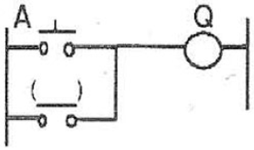
- A
- Q
- A'
- Q'
(정답률: 78%)
52. 시퀀스 제어기기 중에서 검출용 기기에 속하는 것은?
- 누름버튼 스위치
- 리밋 스위치
- 릴레이
- 램프
(정답률: 68%)
53. 다음 논리 회로는 어떤 회로를 나타내는가?(단, A, B가 입력이고, X1, X2가 출력이다.)
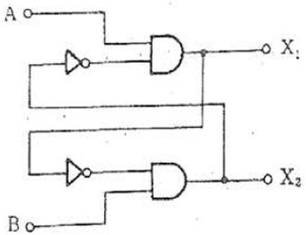
- 배타적 OR 회로
- 인터록 회로
- 금지 회로
- 일치 회로
(정답률: 62%)
54. 그림은 어떤 회로를 나타낸 것인가?
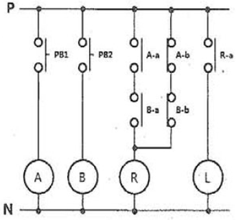
- 일치 회로
- 인터록 회로
- 금지 회로
- 배타적 OR 회로
(정답률: 60%)
55. 전자 접촉기(MC) b접점의 KS 기호는?
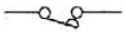
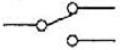
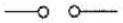
(정답률: 77%)
56. 논리식
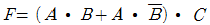
를 간단히 하면?- A+B
- A+C
- AㆍB
- AㆍC
(정답률: 69%)
57. 유접점 시퀀스 제어회로의 b접점은 무접점 시퀀스제어 회로의 무슨 회로와 같은 역할을 하는가?
- AND 회로
- OR 회로
- NOT 회로
- NOR 회로
(정답률: 66%)
58. 다음 중 OR 게이트를 나타내는 논리 회로의 기호는?
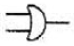
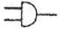
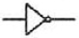
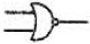
(정답률: 78%)
59. 다음 중 무접점 방식과 비교하여 유접점 방식의 장점에 해당하지 않는 것은?
- 온도 특성이 양호하다.
- 전기적 잡음에 대해 안정적이다.
- 동작상태의 확인이 용이하다.
- 동작속도가 빠르다.
(정답률: 66%)
60. 다음 중 시퀀스제어와 같은 제어는 무엇인가?
- 되먹임 제어
- 피드백 제어
- 개루프 제어
- 폐루프 제어
(정답률: 65%)